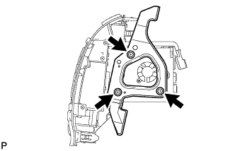
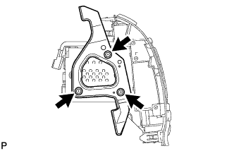

MULTI-DISPLAY (w/ Navigation System) > REMOVAL |
| 1. DISCONNECT CABLE FROM NEGATIVE BATTERY TERMINAL |
| 2. REMOVE NO. 1 SPEAKER OPENING COVER ASSEMBLY |
 |
Detach the 8 claws and remove the opening cover.
| 3. REMOVE NO. 3 INSTRUMENT PANEL REGISTER ASSEMBLY |
 |
Place protective tape as shown in the illustration.
Using a moulding remover, detach the 6 claws.
Remove the register and then disconnect the connector.
| 4. REMOVE NO. 4 INSTRUMENT PANEL REGISTER ASSEMBLY |
 |
Place protective tape as shown in the illustration.
Using a moulding remover, detach the 6 claws.
Remove the register and then disconnect the connector.
| 5. REMOVE MULTI-DISPLAY ASSEMBLY |
 |
Remove the 2 screws and 2 bolts.
 |
Pull the radio receiver to detach the 2 clips and 6 claws on the backside of the display.
Disconnect the connectors and remove the display.
| 6. REMOVE NO. 1 RADIO RECEIVER BRACKET |
 |
Remove the 3 bolts and bracket.
| 7. REMOVE NO. 2 RADIO RECEIVER BRACKET |
 |
Remove the 3 bolts and bracket.